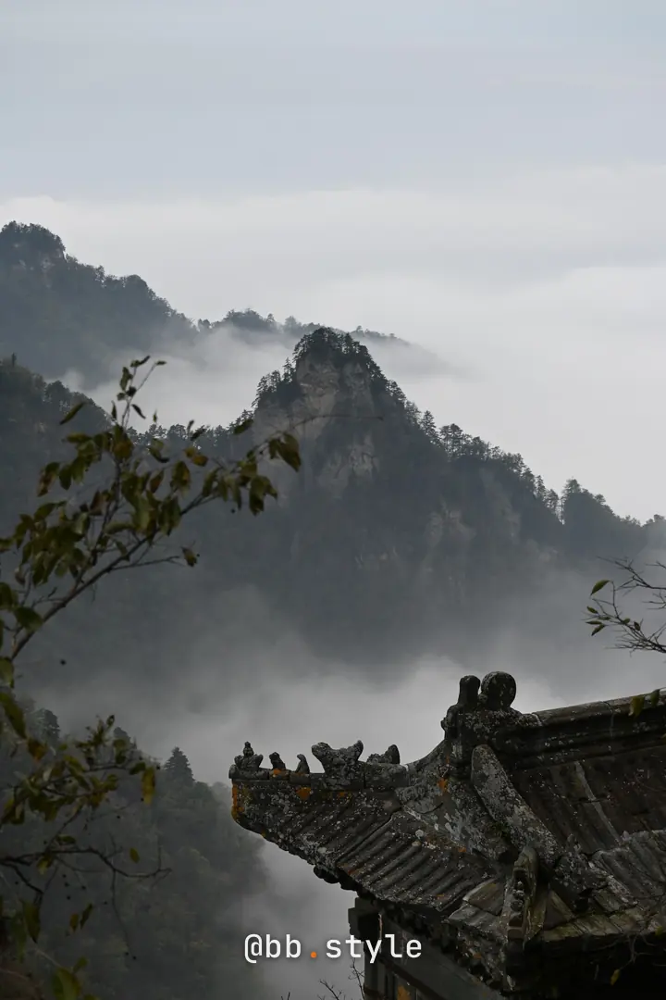
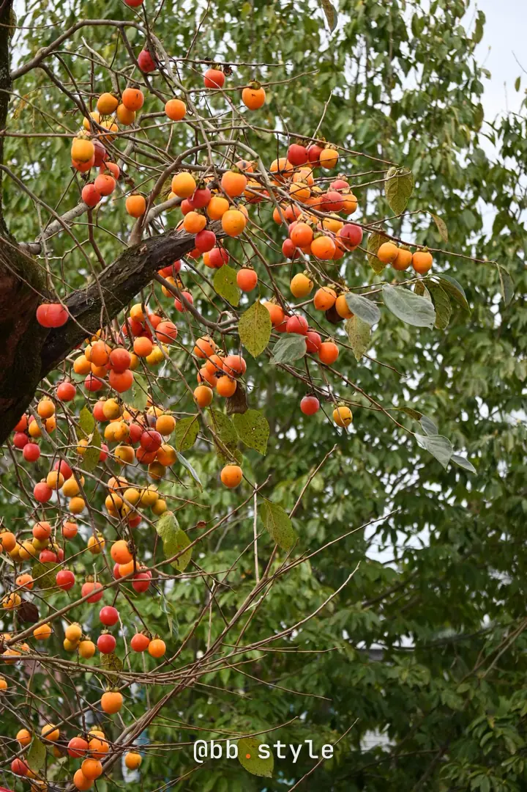
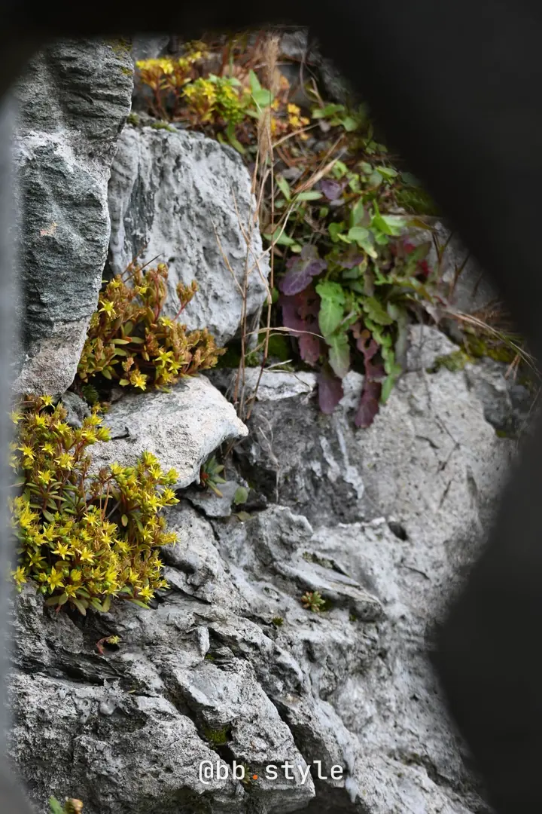

Off work
Photography.
Capturing moments, chasing light, and finding beauty in the everyday.
ScrollSwipe up for the next photograph





All photographs © Bihan Qian.
Capturing moments, chasing light, and finding beauty in the everyday.
ScrollSwipe up for the next photograph



All photographs © Bihan Qian.